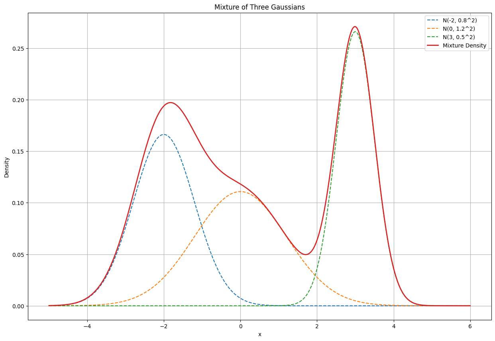

Practical 1: Introduction to probabilistic methods and Monte Carlo simulations#
2024-2025 - Tribel Pascal
In this first practical work, you will become familiar with the fundamental concepts of probabilistic methods and Monte Carlo simulations, using Python and its standard libraries for mathematical and graphical manipulation.
Necessary libraries#
To run this practical work, the following libraries must be installed:
NumPy: Vector and matrix manipulation, random number generation,SciPy: For advanced numerical statistical methods,Pandas: For advanced data manipulationMatplotlib,seaborn: For data visualization,tqdm: For beautiful loading bars.
If you are using Jupyter Notebook, you can install the dependencies directly by running the cell below:
!pip install numpy matplotlib tqdm pandas seaborn
Requirement already satisfied: numpy in /Library/Frameworks/Python.framework/Versions/3.11/lib/python3.11/site-packages (2.3.4)
Requirement already satisfied: matplotlib in /Library/Frameworks/Python.framework/Versions/3.11/lib/python3.11/site-packages (3.10.0)
Requirement already satisfied: tqdm in /Library/Frameworks/Python.framework/Versions/3.11/lib/python3.11/site-packages (4.66.6)
Requirement already satisfied: pandas in /Library/Frameworks/Python.framework/Versions/3.11/lib/python3.11/site-packages (2.3.3)
Requirement already satisfied: seaborn in /Library/Frameworks/Python.framework/Versions/3.11/lib/python3.11/site-packages (0.13.2)
Requirement already satisfied: contourpy>=1.0.1 in /Library/Frameworks/Python.framework/Versions/3.11/lib/python3.11/site-packages (from matplotlib) (1.3.1)
Requirement already satisfied: cycler>=0.10 in /Library/Frameworks/Python.framework/Versions/3.11/lib/python3.11/site-packages (from matplotlib) (0.12.1)
Requirement already satisfied: fonttools>=4.22.0 in /Library/Frameworks/Python.framework/Versions/3.11/lib/python3.11/site-packages (from matplotlib) (4.55.3)
Requirement already satisfied: kiwisolver>=1.3.1 in /Library/Frameworks/Python.framework/Versions/3.11/lib/python3.11/site-packages (from matplotlib) (1.4.8)
Requirement already satisfied: packaging>=20.0 in /Library/Frameworks/Python.framework/Versions/3.11/lib/python3.11/site-packages (from matplotlib) (24.2)
Requirement already satisfied: pillow>=8 in /Library/Frameworks/Python.framework/Versions/3.11/lib/python3.11/site-packages (from matplotlib) (11.1.0)
Requirement already satisfied: pyparsing>=2.3.1 in /Library/Frameworks/Python.framework/Versions/3.11/lib/python3.11/site-packages (from matplotlib) (2.4.7)
Requirement already satisfied: python-dateutil>=2.7 in /Library/Frameworks/Python.framework/Versions/3.11/lib/python3.11/site-packages (from matplotlib) (2.9.0.post0)
Requirement already satisfied: pytz>=2020.1 in /Library/Frameworks/Python.framework/Versions/3.11/lib/python3.11/site-packages (from pandas) (2025.2)
Requirement already satisfied: tzdata>=2022.7 in /Library/Frameworks/Python.framework/Versions/3.11/lib/python3.11/site-packages (from pandas) (2025.2)
Requirement already satisfied: six>=1.5 in /Library/Frameworks/Python.framework/Versions/3.11/lib/python3.11/site-packages (from python-dateutil>=2.7->matplotlib) (1.17.0)
If the libraries are already installed, you can skip this step.
1. Introduction to NumPy#
NumPy is an essential library for scientific computations in Python. It offers:
ndarrayobjects to represent multi-dimensional arrays.A collection of mathematical functions to perform fast operations on these arrays.
Manipulation of NumPy arrays#
Here are some examples for creating and manipulating NumPy arrays:
import numpy as np
Example of creation of arrays#
v0 = np.array([1, 2, 3])
v1 = np.arange(0, 3, 0.2)
v2 = np.linspace(0, 5, 10)
v3 = np.linspace(0, 2, 10)
M = np.array([[1, 2, 3], [4, 5, 6], [7, 8, 9]])
print(v0)
print(v1)
print(v2)
print(v3)
print(M)
[1 2 3]
[0. 0.2 0.4 0.6 0.8 1. 1.2 1.4 1.6 1.8 2. 2.2 2.4 2.6 2.8]
[0. 0.55555556 1.11111111 1.66666667 2.22222222 2.77777778
3.33333333 3.88888889 4.44444444 5. ]
[0. 0.22222222 0.44444444 0.66666667 0.88888889 1.11111111
1.33333333 1.55555556 1.77777778 2. ]
[[1 2 3]
[4 5 6]
[7 8 9]]
Basic operations#
s = np.sum(v0)
m = np.mean(M)
p = np.dot(v2, v3)
print("Sum of v0 components:", s)
print("Average value in M:", m)
print("Scalar product of v2 and v3:", p)
Sum of v0 components: 6
Average value in M: 5.0
Scalar product of v2 and v3: 35.18518518518518
We encourage you to consult the official NumPy documentation to explore its many features: _https://numpy.org/doc/stable/_.
A larger introduction to NumPy and MatPlotLib is available in the \(5^{\text{th}}\) practical of the course INFO-F305 - Modélisation et Simulation.
2. Introduction to the numpy.random module#
The NumPy library includes a numpy.random submodule dedicated to random number generation. This module offers:
Random number generators for various distributions (uniform, normal, binomial, etc.).
Tools for drawing samples and manipulating random sequences.
Reproducibility of results#
To ensure the reproducibility of simulations, it is crucial to set a random seed.
Example:
np.random.seed(42)
values = np.random.rand(5)
print(values)
[0.37454012 0.95071431 0.73199394 0.59865848 0.15601864]
Available distributions#
Here are some common distributions:
numpy.random.uniform(low, high, size): Uniform distribution.numpy.random.normal(loc, scale, size): Normal (Gaussian) distribution.numpy.random.binomial(n, p, size): Binomial distribution.
Sampling#
Sampling is the process of randomly selecting elements from a population. For example:
population = np.array([1, 2, 3, 4, 5])
sample = np.random.choice(population, size=(3, 3), replace=True)
print(sample)
[[3 3 3]
[5 4 3]
[5 2 4]]
Statistical analysis#
Scipy offers tools to analyse statistical distributions. As an example, if wan to get density, repartition function and quantiles of a normal distribution \(\mathcal{N}(0, 1)\):
import scipy as sp
The probability density function of a normal distribution is given by $\(f(x) = \frac{(\frac{e^{\frac{-(x-\mu)^2}{2}}}{\sqrt{2\pi}})}{\sigma}\)\( for \)\mu\( and \)\sigma$ the mean and the standard deviation of the distribution.
mu, sigma = 0, 1
print(sp.stats.norm.pdf(1, loc=mu, scale=sigma))
0.24197072451914337
The quantiles can be obtained using the ppf function:
print(sp.stats.norm.ppf(0.75, loc=mu, scale=sigma))
0.6744897501960817
Finally, the cumulative distribution function can be obtained with cdf:
print(sp.stats.norm.cdf(0.5, loc=mu, scale=sigma))
0.6914624612740131
Exercise#
Using the previous pdf function, plot the histogram of a sampled normal \(\mathcal{N}(0, 1)\) and check that it behaves as the analytical probability density function. Show on the same graph the three quarter quantiles (0.25, 0.5, 0.75).
import matplotlib.pyplot as plt
3. Monte Carlo Simulation#
Monte Carlo simulations are a class of numerical techniques based on the random generation of samples to solve mathematical or physical problems. They are particularly useful for:
Estimating complex integrals.
Solving problems in statistical physics.
Analyzing complex probabilistic systems.
4. Exercises#
Implement a Monte Carlo simulation to estimate the integral of the function \(f(x) = x^2\) over the interval \([0, 1]\).
Use a normal distribution to model a random variable, with parameters \(\mu = 0\) and \(\sigma^2 = \frac12\) and calculate the probability that it takes a value in the interval \([-0.25, 0.25]\).
Use Monte Carlo simulation to approximate numerically the mean of a Normal r.v. \({\mathbf z} \sim N(\mu,\sigma^2)\) and of the variable \({\mathbf y}= {\mathbf z}^2\). Verify that MC returns a good approximation of the analytical result. As a hint, note that \(\mbox{Var}[{\mathbf z}]=E[{\mathbf z}^2]-E[{\mathbf z}]^2\)
Use MC to approximate numerically the value of \(E[f({\mathbf x})]\) and \(f(E[{\mathbf x}])\) for a given deterministic function \(f\), where \({\mathbf x}\) is a Normal variable.
Use MC to approximate numerically the value of the variance \(\mbox{Var}[{\mathbf z}]\) where \({\mathbf z} \sim U(a,b)\) is Uniformly distributed . Check that the result is a good approximation of the analytical value.
Use MC to approximate the value of the Covariance of \({\mathbf x}\) and \({\mathbf y}=K{\mathbf x}\) and verify that the result is a good approximation of the analytical derivation. Check for different distributions of \({\mathbf x}\). As a hint, note \(\mbox{Cov}({\mathbf x},{\mathbf y})=E[{\mathbf x}{\mathbf y}]-K E[{\mathbf x}]E[{\mathbf x}]=E[K*{\mathbf x}^2]-K(E[{\mathbf x}]^2)=K(\mbox{Var}({\mathbf x})+E[{\mathbf x}]^2)-K (E[{\mathbf x}])^2= K\mbox{Var}({\mathbf x})\)
Multivariate Gaussian distributions#
Multivariate Gaussian distributions are multidimensional generalizations of the normal distribution (that you already know well). They can be described by mean vector \(\mu\) and a covariance matrix \(\Sigma\), which shows the covariance between each of the distribution’s dimensions. As an example, if this matrix is diagonal, the variables corresponding to each dimension are independant. In the same way, this matrix has to be diagonal (can you tell why ?).
Exercise 1: 2D Monte Carlo Simulation#
Use MC simulation approximate the mean and covairance of 2-dimensional Gaussian random data with the following parameters:
Mean vector: [2, 3]
Covariance matrix: [[1, 0.8], [0.8, 1]]
Visualize the used data as a scatter plot. Compare the sample mean and the given mean vector.
Hint: use scipy.stats.multivariate_normal for generation and numpy to calculate the sample mean, and use numpy.cov for covariance estimation.
Ensure you understand the difference between population and sample covariance.
Exercise 2#
We define a bivariate gaussian distribution \((Z_1, Z_2)\) with the following parameters:
Mean vector: [0.25, 1.0]
Covariance matrix: [[1.0, 0.5], [0.5, 1.0]]
Plot the regressions of \(Z_1|Z_2\) and \(Z_2|Z_1\). What is their intersection ? Hint: those are given by expressing \(Z_1\) in terms of \(Z_2\) (or the opposite): \(Z_1 = a_1 + b_1Z_2\).
Exercise 3: 3D Monte Carlo Simulation#
Finally, generate 1000 samples of 3-dimensional Gaussian random data with the following parameters:
Mean vector: [1, 4, 7]
Covariance matrix:[[3, 1.5, 0.8], [1.5, 2, 0.5], [0.8, 0.5, 1]]
Estimate the covariance matrix using the generated data. Visualize the pairwise scatter plots of the dimensions (use a scatter plot matrix).
Hints: use pandas.plotting.scatter_matrix or seaborn.pairplot for visualization.
Pay attention to the interpretation of correlations between dimensions.
Exercise 4: Partial correlation#
Given two normal \(\mathcal{N}(0, 1)\) r.v. \(Z_1, Z_2\) and a third r.v. \(Y = Z_1 + Z_2\), compute the correlation between \(Z_1\) and \(Z_2\), then compute the partial correlation between \(Z_1\) and \(Z_2\) given \(Y\). Hint: use the function corrcoef of Numpy to compute the correlation coefficients. What happens to the partial correlation between \(Z_1\) and \(Z_2\) given \(Y\) if now \(Y = Z_1 + Z_2 + Z_3\), for \(Z_3\) another \(\mathcal{N}(0, 1)\) r.v. ?
Minimization#
Scipy offers a convenient tool to perform the minimization of a derivable univariate function: in the module optimize, we have the minimize function.
Exercise#
Define a function
$\(f(x) = x^2 + (\sin{x} + 25)^2\)$
and use the sp.optimize.minimize function to find different local minima. Plot the function an show the different minimas. On which parameter of the minimize function can you play?
Mixture of Gaussians#
Mixture of Gaussians are particular cases of linear combinations of Gaussians r.v. Formally, they are defined as $\(p = \sum_{i=1}^m w_i p_i\)\( where \)p_i\( are normal r.v. and \)\sum_i w_1=1$. As an example, we show here how to define (and plot) the mixture of three Gaussians:
means = [-2, 0, 3]
stds = [0.8, 1.2, 0.5]
weights = [1/3, 1/3, 1/3]
x = np.linspace(-5, 6, 1000)
y = np.zeros_like(x)
for mean, std, weight in zip(means, stds, weights):
y += weight * sp.stats.norm.pdf(x, mean, std)
plt.figure(figsize=(15, 10))
for mean, std, weight in zip(means, stds, weights):
plt.plot(x, weight * sp.stats.norm.pdf(x, mean, std), '--', label=f'N({mean}, {std}^2)')
plt.plot(x, y, label='Mixture Density', linewidth=2)
plt.legend()
plt.xlabel('x')
plt.ylabel('Density')
plt.grid()
plt.title('Mixture of Three Gaussians')
plt.show()
